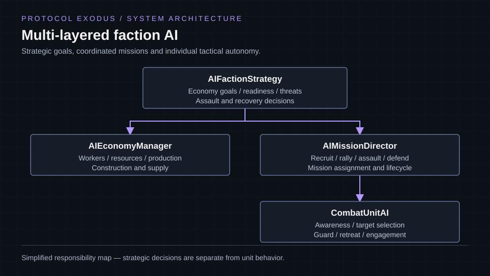
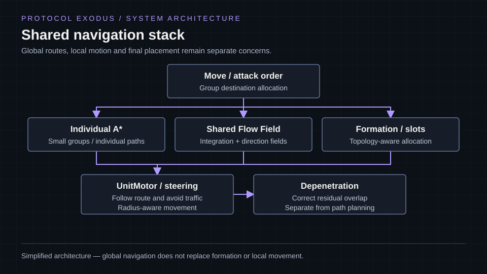
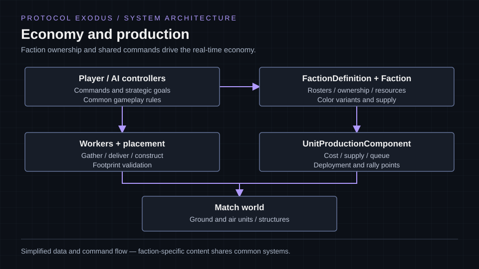

PROTOCOL EXODUS
Sci-Fi Real-Time Strategy
Project overview
Protocol Exodus is a sci-fi real-time strategy game developed in Unity and C#, inspired by classic base-building RTS games. Players establish a base, gather resources, develop their forces and command infantry, mechanized units and aircraft against autonomous enemy factions.
The project builds on earlier Java RTS experiments, translating algorithmic research into a playable strategy game. Its central engineering challenge is coordinating large groups of autonomous units while keeping navigation, tactical decisions, economic simulation and player commands responsive and maintainable.
The architecture separates navigation, unit behavior, faction strategy and gameplay systems so each can evolve independently while sharing the same match rules.
My contributions
- Custom grid-based A* and shared Flow Field navigation for group movement.
- Radius-aware clearance, formation allocation, local steering and unit depenetration.
- Multi-layered enemy AI: individual combat decisions, squad missions and faction strategy.
- Resource gathering, building construction, supply and unit production systems.
- Data-driven faction and unit definitions, shared match initialization and command architecture.
- RTS controls, selection, tactical HUD, minimap and combat presentation.
Gameplay & Technical Systems
A closer look at the artificial intelligence, navigation algorithms and gameplay architecture behind Protocol Exodus.
Multi-Layered Faction AI
Enemy factions operate through three complementary layers of intelligence, from individual combat decisions to coordinated missions and strategic economic planning.
Individual Combat Intelligence
CombatUnitAI responds to threats, manages objectives and supports defensive behavior and critical-health retreat. Tactical autonomy is kept separate from the larger mission assigned to a unit.
Squad Missions & Assault Waves
AIMissionDirector recruits eligible units, reserves participants and coordinates assault and defense missions. Squads assemble, move toward shared objectives, engage enemies and can withdraw or terminate unsuccessful missions.
Faction-Level Strategy
AIFactionStrategy evaluates military readiness, local threats, economic goals and mission outcomes. It coordinates with AIEconomyManager to develop the base, prepare attacks, defend and recover after losses.

Scalable RTS Navigation
The navigation framework evolved from individual A* searches to a hybrid architecture that shares the expensive global navigation solution across large groups while preserving individual movement.
A* & Shared Flow Fields
Individual A* remains useful for smaller commands, while shared Flow Fields address the repeated-search problem for larger formations. Multi-source Dijkstra integration generates a spatial cost field from which units sample movement directions.
Clearance & Local Steering
Radius-aware traversability and static clearance costs account for different unit sizes. Local steering adapts to nearby traffic without replacing global guidance, and a separate depenetration system resolves residual overlaps.
Formation & Tactical Allocation
Destination allocation is distinct from pathfinding. Topology-aware formation slots distribute units across the destination area; attack-position allocation gives combat units space to engage a common target.

Economy, Production & Factions
The RTS economy is built around shared, data-driven gameplay rules rather than separate implementations for player-controlled and AI-controlled factions.
Resources & Construction
Workers gather and deliver resources to their faction. Building placement validates spatial footprints, and supply structures and production buildings expand the faction's capacity.
Production & Unit Deployment
UnitProductionComponent validates costs and supply, manages production queues and deploys units to appropriate spawn positions and rally destinations. Ground units and aircraft use distinct deployment paths.
Data-Driven Faction Architecture
FactionDefinition, UnitDefinition and BuildingDefinition describe available content, costs and gameplay configuration. GameBuilder initializes match participants and starting assets, while player and AI controllers operate on shared systems.

From algorithmic experiments to a playable RTS.
Protocol Exodus brings together research in pathfinding, autonomous agents and game systems within a single playable strategy game. Development continues with a focus on scalable simulation, intelligent opponents and responsive gameplay.